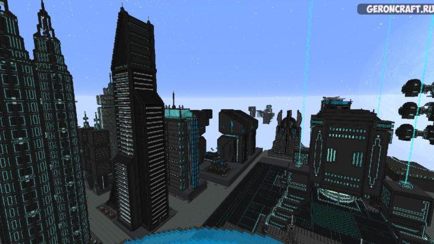
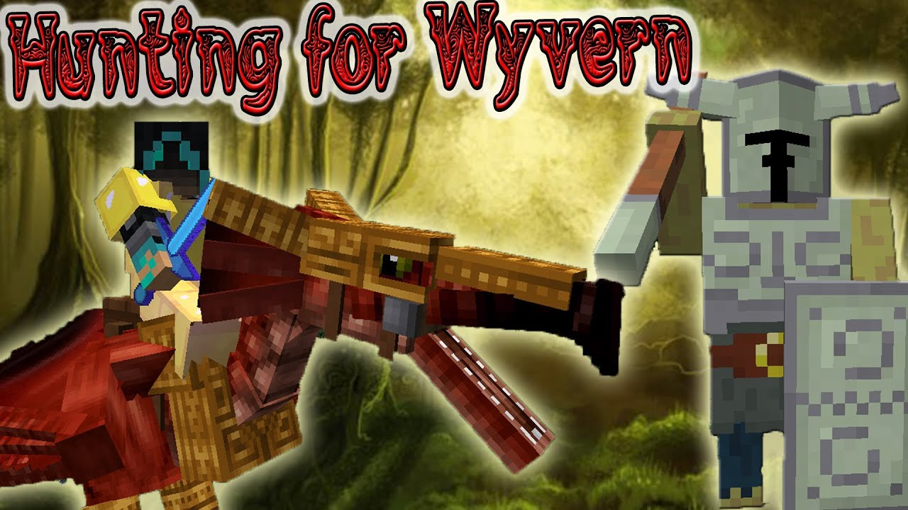

Frost
Frost — Юрий Александрович Маштаков российский геймер и видеоблоггер, довольно популярный в русском сегменте Youtube.Долю славы Frost получил на YouTube, где зарегистрировал свой канал 2 октября 2012 года. На 5 января 2020 года имеет более 8.100.000 подписчиков и более 3 181 588 555 просмотров. Поначалу стал популярен на YouTube благодаря игре Minecraft.У Фроста достаточно много знакомых и друзей, которые имеют свой канал на Youtube. Одни из самых популярных его друзей — это Снейк — брат Фроста и Парниша. Также выяснилось, что Фрост и EeOneGuy имеют хорошие дружеские отношения
Приключения Илона Маска 1.12.2
Сборка модов от фроста, по которой он снял 48 серий. Как ясно из названия основной упор сделан на моде GalactyCraft. Вы будете путешевствовать по космосу, сражаться с босами, развивать техно моды и т.д.
СкачатьПутешественники 1.6.4
Одна из самых популярных сборок фроста, подарившая нам легендарную фразу ЭТО СПАРТА в его исполнении. В сборке присутствует много контента:как зачистки башен, так и крафта соВременного оружия.По сборке было снято 13 серий и все они были весёлыми.рекомендуется к просмотру
СкачатьНовогогодние Приключения 1.6.4
.jpg)
Сборка, которую фрост снимал как не трудно догодаться в придверии нового года. В ней сочитаются такие моды как Orespawn, LuckyBlock, Battle Towers и многие другие от чего вы точно не заскучаете.Особенно атмосферно проходить эту сборку во время приближающегося нового года, что опять же рекомендуется.
СкачатьЗаоблачные Приключения
.jpg)
Центральный мод этой сборки это мод Aether 2.В нём вы сможете исследовать Заоблачный мир или как его обычно называют Рай. Хоть это и звучит как что то безопасное, не обманывайтесь поскольку это чертовски опасное место
СкачатьDark Adventure 1.6.4
По данной сборке вышло 11 серий.Это безусловно интересная сборка в которой перед вами открывается множевство возможностей.Вы сможете попутешевствовать по сумеречному лесу, сразиться с его боссами или вырастить драконов. Всё зависит от вас
Скачать